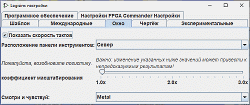

Вкладка «Окно»

На этой вкладке находятся настройки, влияющие на внешний вид и поведение окон интерфейса Logisim-evolution.
-
Сбросить расположение окон к настройкам по умолчанию Logisim: эта кнопка сбрасывает все геометрические параметры окон и панелей к исходному состоянию по умолчанию.
-
Показать частоту тактов: если эта опция включена, то при работающем тактовом генераторе на холсте отображается текущая частота (скорость) генерации тактов. Она вычисляется как среднее значение за последние 1000 тактов. При отключении генерации тактов или изменении максимальной тактовой частоты история сбрасывается.
Фактическая частота тактирования может оказаться намного ниже установленной в меню, так как моделирование больших и сложных схем требует значительных вычислительных ресурсов. Например, если предел производительности компьютера для конкретной схемы составляет 16 Гц, то даже при выборе более высокой частоты фактическая скорость моделирования не превысит 16 Гц.
-
Расположение панели инструментов: настраивает положение панели инструментов главного окна. Панель можно разместить у любой из четырёх границ рабочего пространства (сверху, снизу, слева или справа), скрыть либо установить «посередине» (слева от холста, но справа от панели проводника и таблицы атрибутов).
-
Настройки цветов интерфейса и сетки:
- Цвет фона холста: цвет рабочей области, когда отображение сетки выключено.
- Цвет фона сетки: цвет рабочей области при отображении сетки.
- Цвет точек сетки: цвет основных узловых точек координатной сетки.
- Цвет точек сетки при масштабировании: цвет промежуточных вспомогательных точек сетки, появляющихся при увеличении масштаба.
-
Масштаб: позволяет задать коэффициент масштабирования всего интерфейса приложения (полезно для экранов высокого разрешения Ultra HD / Retina). При наличии системных возможностей масштабирования рекомендуется использовать средства операционной системы.
Для вступления изменений в силу требуется перезапуск программы. -
Стиль интерфейса: позволяет выбрать тему оформления графического интерфейса (Look and Feel) из списка доступных в системе тем.
Для вступления изменений в силу требуется перезапуск программы. -
Предпросмотр: область в правой части вкладки наглядно демонстрирует, как изменится интерфейс приложения при выборе того или иного стиля оформления.
Далее: Вкладка «Холст».